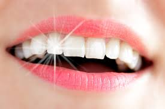

Hugo Daniel
CEO @VlaBienCorp
Le savon de marseille est un animal aquatique incompressible. Il est bien connu pour sa faculté à diffracter la lumière des ampoules basse consommation de marque Leclerc.
Apprend vla les trucsMes connaissances que je préfère les plus
 |
L'escargotL'esgargot il a plus de 20 000 dents microscopiques sur sa langue. |
|  | Fait diversEn 1977, un jeune de 13 ans a remarqué qu'une dent poussait sur son pied gauche. |
La moucheLa durée de vie moyenne d'une mouche domestique est de 19 jours. Plus exactement 17 jours pour le mâle et 21 jours pour la femelle. |